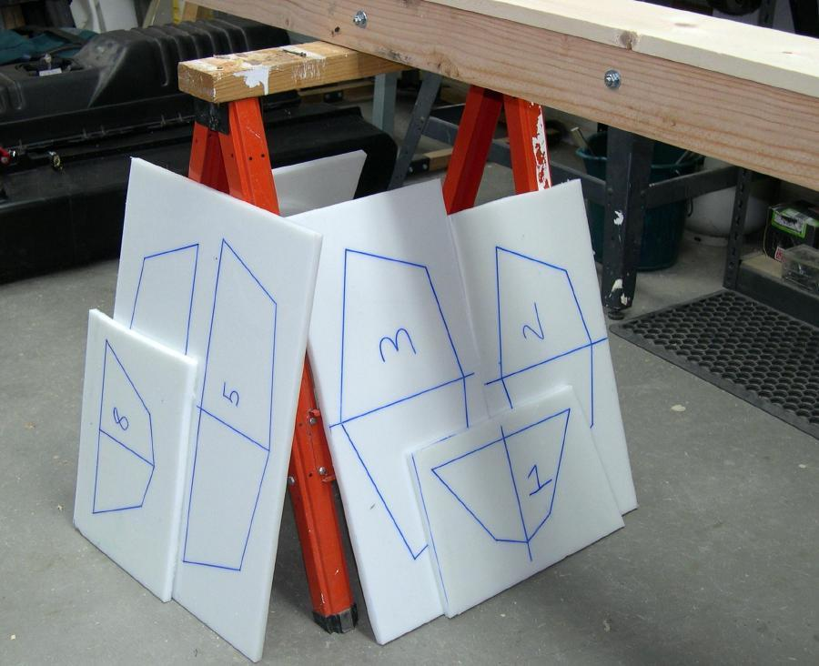

HDPE Cross Sections
Menu
Previous Page
Next Page

Repeat the procedures described in this section to complete all eight cross sections. Next, draw reference lines for drilling the stringer to cross section "snap" connection holes.